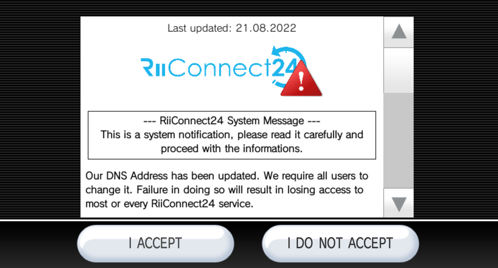

Actualización del DNS de RiiConnect24
Si tienes problemas para seguir los pasos de esta guía, por favor solicita ayuda en el Discord de RiiConnect24 (recomendado) o envía un correo electrónico a [email protected] (soporte disponible solo en inglés).

Nuestra direccion DNS ha sido actualizada. Se requiere que todos los usuarios de nuestros servicios la actualizen. No actualizarla puede causar que pierdas acceso a la mayoria de los servicios de RiiConnect24.
La dirección antigua funcionará hasta la fecha de DEPRECACIÓN. Te recordaremos usando Wii Mail o nuestro servidor de Discord sobre la necesidad de cambiar la dirección DNS en los próximos meses.
Hemos restringido el acceso solo al canal Noticias y al canal Tiempo a todos aquellos usuarios que sigan utilizando la antigua dirección DNS. Los usuarios tambien encontraran una nueva EULA en el momento de habilitar WiiCOnnect24, recordandoles del cambio.  

Para actualizar la direccion DNS, sigue los siguientes pasos:
- Selecciona
Opciones de Wiien el menú de Wii. - Selecciona
Configuración de Wii. - Pasa a la segunda página y después selecciona
Internet. - Ves a
Ajustes de conexión. - Selecciona tu conexión actual.
- Pulsa sobre
Modificar - Pasa hasta la cuarta página, donde está la opción
Obtener DNS automáticamente(no es en Obtener drección IP automáticamente), eligeNoy después seleccionaConfiguración avanzada. - Establece el DNS primario como
167.86.108.126. - Establece el DNS secundario como
1.1.1.1. - Selecciona
Confirmary finalmenteGuardar - Pulsa en
Aceptarpara ejecutar una prueba de conexión. - Si la prueba de conexión ha sido exitosa, elige
Nopara saltar la actualización de la consola Wii.
El servidor DNS antiguo dejara de funcionar el 01/06/2023.